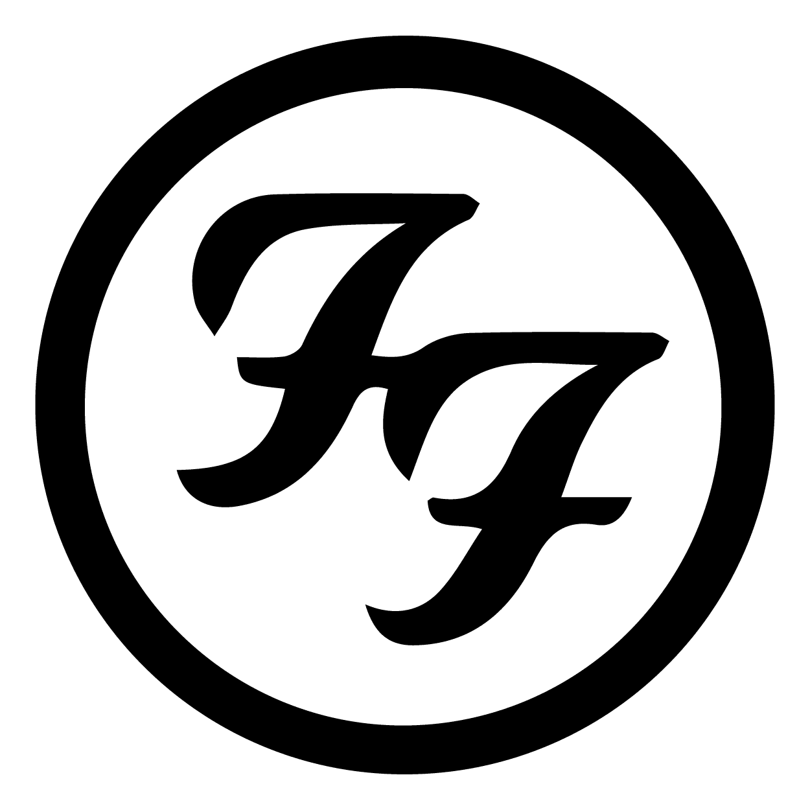

David Eric Grohl (Warren, Ohio, 14 de enero de 1969): Vocalista.
Músico multiinstrumentista estadounidense de rock. Saltó a la fama a comienzos de los años 1990 como baterista de la icónica banda de grunge Nirvana. En 1994, tras la muerte de Cobain y el fin de Nirvana, formó la que es su actual agrupación, Foo Fighters, siendo él en un principio el único miembro y más tarde el vocalista, guitarrista y compositor. Grohl empezó su carrera musical en los años 1980 como baterista para varias bandas de Washington, DC, de las cuales la más destacada fue Scream. Más tarde se instaló como baterista de Nirvana. En 2004 editó un disco bajo el nombre de Probot, en el cual colaboraban sus cantantes de heavy metal favoritos. También ha destacado siendo uno de los miembros principales de Queens of the Stone Age, Garbage, Tenacious D, Killing Joke y Juliette and the Licks. La revista Rolling Stone lo situó en el puesto n.° 27 en su lista de los «100 mejores bateristas de todos los tiempos». Actualmente reside en Encino (California) en donde convive con su esposa Jordyn Blum y sus hijas.
Oliver Taylor Hawkins (Texas, 17 de febrero de 1972 - Colombia, 25 de marzo de 2022): Bateria.
Fue un músico estadounidense, conocido por ser el baterista de la banda de rock Foo Fighters. Antes de unirse a la banda en 1997, fue el baterista de gira de Sass Jordan y Alanis Morissette, así como el baterista de la banda experimental progresiva Sylvia. En 2004, Hawkins formó su propio proyecto paralelo, Taylor Hawkins and the Coattail Riders, en el que tocaba la batería y cantaba. Fue elegido "Mejor baterista de rock" en 2005 por la revista de percusión Rhythm del Reino Unido.
Nathan Gregor Mendel (Richland, Washington, 2 de diciembre 1968): Bajo.
Es un bajista estadounidense de rock alternativo, conocido por ser miembro de las bandas Foo Fighters y Sunny Day Real Estate.Su primer instrumento fue el violín. A partir de los 13 años, Mendel comenzó a interesarse por la música rock y se unió a una banda, un amigo que tocaba la guitarra le sugirió que tocara el bajo. Mendel declaró que "cuando cogí ese bajo me fui 20 años hacia el punk ", ayudado por su ciudad que suele tener conciertos de bandas de punk DIY como Scream. Esto condujo a una "educación musical bastante limitada", ya que a pesar de tomar algunas lecciones con un bajista de una banda local, Mendel aprendió a tocar por sí mismo, y "todo era punk rock duro, como Minor Threat , Black Flag y Bad Brains" . En lugar de estudiar la forma de tocar el bajo de alguien como John Entwistle , lo que me habría dado una base sobre cómo tocar. Solo quería tocar muchas notas muy rápido".
Christopher Aubrey Shiflett (San Francisco, 6 de mayo de 1971): Guitarra.
Además de sus deberes de tiempo completo con los Foo Fighters, Shiflett también toca en su propio proyecto paralelo, Jackson United , así como en Viva Death con su hermano, Scott. Para numerosos proyectos, Shiflett actuó bajo el nombre de Jake Jackson. A veces toca con la banda de covers Chevy Metal con su compañero de Foo Fighter Taylor Hawkins . Tocan canciones de bandas de rock clásico como Black Sabbath , Queen , ZZ Top y Rolling Stones . Shiflett tiene un tatuaje en el interior de su labio inferior con las palabras "Gimme Gimme", aparentemente como un tributo a sus esfuerzos con la banda de versiones Me First and the Gimme Gimmes . En 2009, Shiflett tocó en una banda llamada The Real McCoy, que fue fundada por Andy McCoy , el guitarrista de la antigua banda de rock finlandesa Hanoi Rocks . La banda se separó después de solo tres conciertos.
Pat Smear (Los Angeles, 5 de agosto de 1959): Segunda Guitarra.
Su madre es afrodescendiente y su padre es alemán. De adolescente, en 1976, Smear conoció a Darby Crash y ambos conformaron la banda Germs con la bajista Lorna Doom y la baterista Dottie Danger. La banda lanzó su primer álbum, (GI). Producido por Joan Jett, el álbum es ahora considerado como uno de los más importantes de la historia del punk rock. Germs se desintegró con la muerte de Crash, en 1980. Luego apareció en programas de televisión como CHiPs y películas como Breakin'. En 1993 recibió una llamada del líder de Nirvana, Kurt Cobain, preguntándole si quería unirse a la banda como guitarrista rítmico.4 Pat aceptó inmediatamente y tocó su primer show con la banda en Saturday Night Live el 25 de septiembre de 1993. Después del fin de Nirvana, el baterista de esta banda, Dave Grohl, lo invitó a unirse al proyecto que sería conocido como Foo Fighters.
Rami Jaffee (Los Angeles, 11 de marzo de 1969): Piano y Organo.
Rami Jaffee, nacido el 11 de marzo de 1969, en Los Ángeles, es mejor conocido como el tecladista de The Wallflowers y el trabajo de varias bandas y artistas como Foo Fighters, Pete Yorn, Soul Asylum, Pearl Jam, Stone Sour, Arturo José y Coheed and Cambria. Jaffee compró su primer teclado a los 13 años. Pronto empezó a tocar con varias bandas locales mientras asistía a Fairfax High School. Durante sus años de escuela secundaria, que solía pasar mucho tiempo en el Deli de Canter, por la calle de su escuela secundaria en la avenida Fairfax. Deli de Canter, o más específicamente, la sala de kibitz (una pequeña barra en la parte trasera de la tienda de comestibles), ha demostrado ser una influencia importante en la carrera musical de Rami.